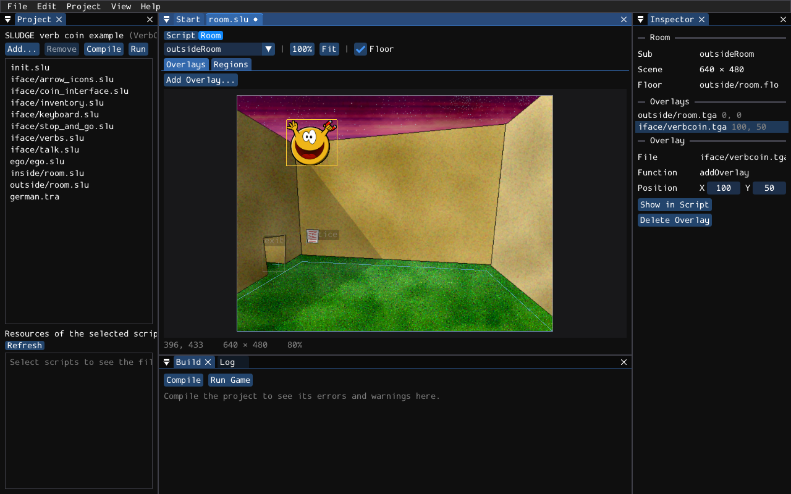
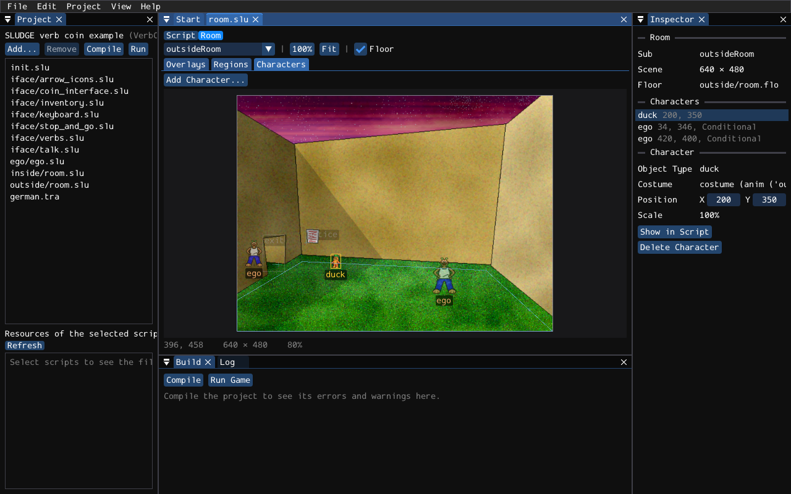
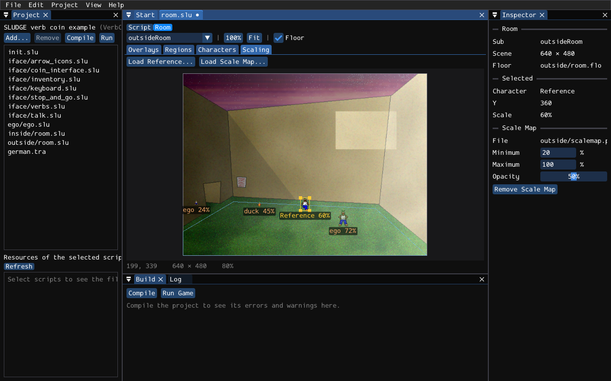

Screen regions are the parts of a room that the player can point at: a door, a notice, a duck. You make them with addScreenRegion, and you give it the corners of a rectangle, or the points of a shape, as numbers. Working those numbers out by hand means a lot of compiling, running, squinting and guessing. The room editor lets you draw them on the picture of the room instead.
There's no separate file for a room. The room editor reads the script itself: it finds the subs that set up rooms, draws the pictures they paste with addOverlay, and the regions they make. When you move or draw a region, it changes the numbers in the script. So your script is still the one place where your room lives, and what you type in the script shows up in the room editor straight away.
Open the script in the script editor, and click Room at the top of its tab (or choose Room Editor from the View menu). Script takes you back to the text. Pick the room you want from the list in the toolbar.
Under the toolbar are four tabs: Overlays, for the pictures of the room, Regions, for its screen regions, Characters, for the characters it puts in it, and Scaling, for how big those characters are wherever they stand. Each tab has its own tools, a click on the room picks something of that tab, and the Inspector shows that tab's list and settings. That way you can't grab the backdrop when you meant to grab a door. This is the outside of the verb coin example in the Regions tab, with the tunnel selected:

A room, as far as the editor is concerned, is a sub that calls addOverlay, mixOverlay, addScreenRegion, addCharacter or setFloor. Subs inside an objectType don't count, as those are what the player's clicks run, rather than rooms. The verb coin example has a sub for each room, which gotoRoom calls, and that works nicely:
sub outsideRoom () {
addOverlay ('outside/room.tga', 0, 0);
setFloor ('outside/room.flo');
addScreenRegion (notice, 140, 272, 165, 299, 140, 300, NORTH);
addScreenRegion (exit, 52, 284, 96, 358, 83, 344, WEST);
}
The editor shows the scene as the game builds it: the pictures of addOverlay and mixOverlay where they go (CENTRE, or CENTER, centres them, as in the game), the outline of the floor from setFloor (untick Floor in the toolbar to hide it), and every screen region with the name of its objectType. A cross shows where a character walks to when the player uses the region, with a little line for the way it faces.
The scene is the size that setSceneDimensions gives it, if the room calls it, and otherwise the size of your game's window, from the project. The file names are found the way the compiler finds them, in the folder of the project. The Inspector lists the room's pictures and regions, and says so when it can't find a picture.
In the Overlays tab, Add Overlay... asks for a picture (a PNG or TGA file) and adds an addOverlay for it to the room, at 0, 0. Quicker still: drag the picture onto the room from your file manager. The new overlay goes after the room's other overlays, so it's drawn on top of them. Its file name is written from the folder of your project, as the compiler wants it.

Click an overlay to select it, either on the room or in the Inspector's list, and drag it to move it, or type its position in the Inspector. A click on a see-through part of a picture goes to the picture under it, so a cut-out on top of the backdrop won't get in your way. Delete (or Backspace), or Delete Overlay in the Inspector, takes the selected overlay out of the script again.
The editor keeps overlays inside the scene when you move them, because the game stops with an error when an overlay doesn't fit. If one of your overlays is already sticking out, the Inspector says "Outside the scene". An overlay at CENTRE gets numbers once you move it.
In the Regions tab, choose Select (or press 1). Click a region to select it, and drag it to move it. Drag one of its handles to move a corner or an edge of a rectangle, or a point of a shape. Drag the cross to move the place where characters walk to. You can type the numbers in the Inspector too, and choose the direction there.
To add a point to a shape, double-click its edge where you want the point. Delete (or Backspace) deletes the selected point, or the whole region if no point is selected. Convert to Shape in the Inspector turns a rectangle into a shape with four corners, which you can then pull about however you like.
In the Regions tab, choose Rectangle (2) and drag out a rectangle, or choose Shape (3) and click the points of a shape one at a time. Click the first point again, or press Enter, to finish the shape. Backspace takes back the last point, and Esc gives up on it.
The editor then asks which objectType the region is for. Choose one from the list, or choose New Object Type and type a name. A new objectType is added to the script after the room's sub, empty, ready for you to fill in its events. The new addScreenRegion goes after the room's last region. Its walk-to point is 0, 0, so characters don't walk anywhere; drag the numbers in the Inspector to give it one.
The Characters tab shows the characters that the room adds with addCharacter, standing still and facing you, as they are when they arrive: the first picture of the first animation of their costume. If the costume comes from a sub, such as makeEgoAnim () in the verb coin example, the editor looks in the sub to find it. When it can't tell what a character looks like (a costume in a variable, say, or a sprite bank it can't find), it draws a ring with a cross where the character's feet are.

Characters are drawn at the size the game gives them, from the room's setScale or, if it has one, its scale map. Drag one up the room and watch it shrink. A room that doesn't call setScale shows its characters at full size, even though the game would use whatever an earlier room set. The Inspector shows the scale of the selected character.
Click a character, on the room or in the Inspector's list, and drag it to move it, or type its position in the Inspector. Delete (or Backspace), or Delete Character, takes its addCharacter out of the script. The editor leaves the lines that walk it about, such as moveCharacter, where they are, so tidy those up yourself.
Add Character... asks which objectType the character is (pick one, or type the name of a new one, as for regions) and what it wears. For the costume, choose one of the subs of your project that give back a costume, or choose Sprite Bank... and pick a .duc file, which gives the character the first sprite of the bank. Dropping a sprite bank on the room does the same, with that bank already chosen. The new character turns up in the middle of the lower half of the room, ready to be dragged where you want it.
The two egos of the verb coin example are drawn faintly, because they're inside an if: the game only adds one of them, depending on the room you came from.
Rooms often set a character up straight after adding it: which way it faces, how it's drawn, how fast it walks. The Inspector shows these settings for the selected character, and changing one changes the script: Facing is turnCharacter, Draw Mode is setCharacterDrawMode, the Extras are setCharacterExtra, Walk Speed is setCharacterWalkSpeed and Depth is setCharacterZ.
The editor reads the first of each of these after the character's addCharacter, as long as it's for the same objectType. A new one goes on a line of its own after the character's other settings. Set something back to how a new character starts (Default, NORMAL, no extras, an empty Walk Speed or Depth) and its line is taken out again, so you won't end up with a script full of calls that do nothing.
The room shows what it can: the facing picks the costume's standing picture for that direction, the draw mode colours the character as the game does, FIXEDSIZE keeps it at full size, and FRONT and Depth change which character is drawn in front. An INVISIBLE character is drawn as a ring with a cross, like a character without a picture, or you'd never find it again. The other extras and the walk speed only show in the game.
Characters in SLUDGE get smaller as they walk away from you, and how much smaller is up to setScale. Its two numbers are easy enough to work out on paper, but it's a lot quicker to stand a character where you want it and see. The Scaling tab shows the room's pictures and characters, and nothing else, with each character's size under its feet.

Dragging a character in this tab doesn't move it in the script: it's only there to try the scale. If the room has no characters yet, or you'd rather not use them, Load Reference... (or dropping a sprite bank on the room) brings in a character of your own, which never goes near the script.
To make a setScale, drag a character to the back of the walkable area and pull one of the handles on the corners of its box until it's as big as it should be there. It grows and shrinks from its feet, and keeps its shape. Click Set Minimum Scale, and the editor takes both its size and where it stands. Then drag it to the front, size it again, and click Set Maximum Scale. The editor works out the setScale from the two points and writes it into the room, and every character takes its new size straight away. You can also type the sizes and Y positions in the Inspector. If the room had no setScale, the new one goes before its first character, because the game only scales the characters added after it.
A character that has become tiny has its handles right on its feet, so grabbing it there moves it. Zoom in if you want to size it.
For a room where a straight line from small to big won't do, such as a path that winds up a hill, use a scale map instead: a grey picture as big as the room (or smaller, it's stretched), dark where characters are small and light where they're big. Load Scale Map... (or dropping the picture on the room) adds a setScaleMap, and then only the Minimum and Maximum sizes matter: the sizes of black and of white. The map is drawn over the room so you can see what's where, and Opacity makes it more or less see-through. Remove Scale Map takes it out of the script again.
The editor only changes numbers that are written as numbers. If a region's corners are worked out, such as x + 32, or its points come from a variable, the editor still finds the call, but it can't tell where the region is, so it leaves it alone. The Inspector says why. That's the case for the verb coin itself, whose regions move with the mouse, which is fine: that isn't a room.
Regions inside an if or a loop are drawn more faintly. You can still edit them, but remember that the game only makes them some of the time!
Every change the editor makes is a change to the script, so Undo in the Edit menu takes it back, and you save the script as usual. The editor remembers which room and which tab you were looking at, and whether the script was showing its room, for next time.
SLUDGE and this SLUDGE documentation are copyright Hungry Software and contributors 2000-2026